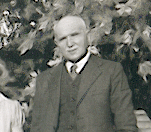

The Stein Family

Lorenz L. Stein
This page traces the Stein family genealogy. Tap any name below to open that person's genealogy page.
-
Casper Stein (1828-1900)
+ Elizabeth Bamby (1837-1910) -
Lorenz Louis Stein (1865-1953)
+ Dorthea Reismann (1873-1968) -
Louis Lorenz Stein Jr. (1902-1963)
+ Mildred (Milly) Ruth Slater (1903-1989) -
Dr. Robert Louis Stein (1929-1997)
+ Anita Emma Schmidt (1930-2024) -
Louise Dorothea Stein (1898-1963)
+ Emil Ernest Gloor (1884-1946) -
Nancy Louise Gloor (1929–2007)
+ William Gibson Magrath (1920-1990) -
Emil Herbert Gloor (1928–2014)
+ Muriel Joan Campbell (1929-2007)

Last updated on July 15, 2026